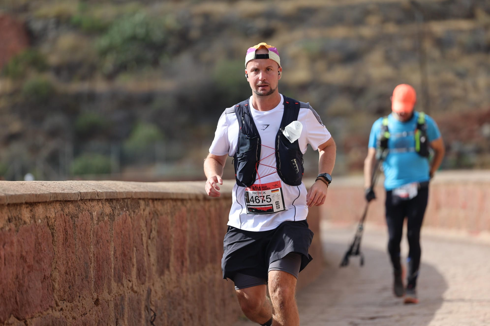

El reto
Una forma de descubrir España a pie. De la costa mediterránea al Atlántico, del norte lluvioso al sur soleado.

Empecé a correr en serio en 2023 y desde entonces he completado 4 maratones y 1 maratón de trail. Llevaba años planeando mudarme a España y durante ese tiempo me instalé en Las Palmas de Gran Canaria, que se convirtió al instante en mi hogar.
Este reto nació de una idea sencilla: ¿y si recorriera todos los maratones oficiales de España? No por competir, sino por descubrir. Cada maratón es una excusa para llegar a una ciudad nueva, explorar sus calles antes y después de la carrera, y coleccionar kilómetros de experiencias.
Empecé en Málaga en diciembre de 2025. El siguiente es Vitoria-Gasteiz, el 10 de mayo de 2026. Quedan 19 ciudades por delante, y no podría estar más emocionado.
¿Preguntas? ¿Corres tú también alguno de estos maratones? No dudes en contactarme.